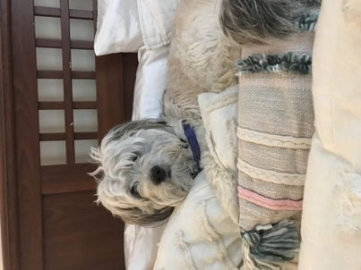

Contact
Jessica "Kali" Wright
(804) 248-1685
wrightjk@dukes.jmu.edu

Skills
Languages
HTML5, CSS3, Java
Applications
Adobe Creative Cloud (Photoshop, Lightroom, InDesign, Illustrator), Microsoft Office (Word, Excel, PowerPoint), Sublime Text Editor, Vegas video editing softwares
Education
Bachelor of Science
James Madison University
•Major: Media Arts and Design, Journalism
•Minor: English
•Expected May 2021
Experience
Work Experience
October 2019 ‑ present
James Madison University, Harrisonburg, VA
Writer
The Bluestone Yearbook
- Interviewed students, staff, and community members to be featured in the yearbook.
- Wrote and submitted stories by the deadline each month.
Relevant Coursework
Fall 2019
James Madison University, Harrisonburg, VA
Foundations of User Experience Design
- Applied visual design skills (typography, layout, color theory, symbolism, infographic design, and iconography) to mobile and desktop web page design.
- Select and implement appropriate user interface patterns on a web page.
- Analyzed basic web site statistics and draw conclusions to improve the user experience.
- Created a wordpress website to showcase various assignments completed during the course.